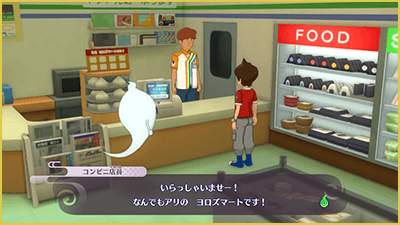
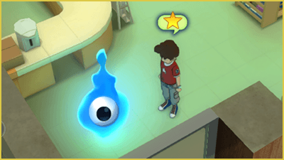
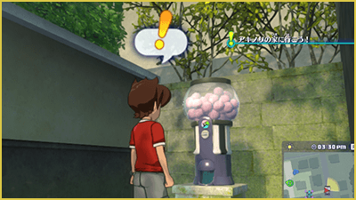
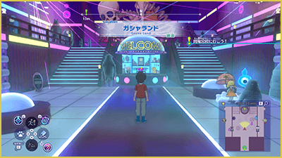
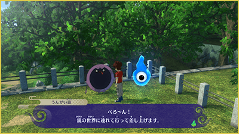
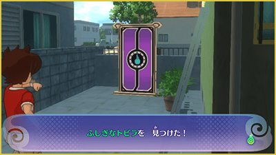

Usar servicios
En la zona abierta hay diversas instalaciones y servicios que puedes usar. A continuación, se presentan algunas de ellas.
Superhíper
Habla con el empleado para comprar o vender comida u objetos.

Ignóculo
Habla con un Ignóculo en un Superhíper, en las ciudades, etc.., para restaurar los PV y los PY de tus Yo-kai. También puedes guardar tu progreso y organizar a los miembros del equipo, entre otras cosas.

Expendekai
Puedes usar monedas de Expendekai para hacer tiradas y conseguir Yo-kai u objetos. Hay una Expendekai en cada uno de los cuatro mundos, los objetos y Yo-kai que puedes obtener son diferentes en cada una.
Además, existe un límite diario de tiradas. El número de tiradas disponibles cambia según el día, con un máximo de 30 tiradas.

Monedas de expendekai
Las Monedas de Expendekai pueden obtenerse de diversas maneras, como en cofres del tesoro, como recompensa por completar misiones, mediante el escaneo de Arks, etc.
Los Yo-kai y objetos que pueden conseguirse varían según el tipo de moneda.
Tarjeta de puntos expendekai
Cada vez que haces girar una Expedekai, acumulas puntos en la Tarjeta de puntos Expendekai. Los puntos acumulados pueden canjearse por premios en ExpendeLand.
Además, periódicamente hay días con multiplicadores de puntos "Día de puntos x3", durante los cuales se obtienen más puntos de lo habitual.
ExpendeLand
ExpendeLand es una instalación que se encuentra en uno de los mundos. Aquí están disponibles todas las Expendekai de los cuatro mundos. También puedes realizar "Emparejamineto" en la Agencia de Almas, intercambiar puntos de expendekai por premios y hacer muchas otras cosas.

Telespejo
Una vez desbloqueado, podrás utilizar cualquier Telespejo para teletransportarte hasta otro Telespejo. También puedes teletransportarte a un Telespejo directamente desde la pantalla del mapa.

Puertas de Ark
Las Puertas del Ark conectan con el mundo de Shadow Time. Algunas también conducen a otros lugares. Muchas de estas puertas están ocultas. Puedes encontrarlas utilizando el Modo Reloj, momento en el que aparecerán. Para abrirlas, necesitas el Ark correspondiente.
